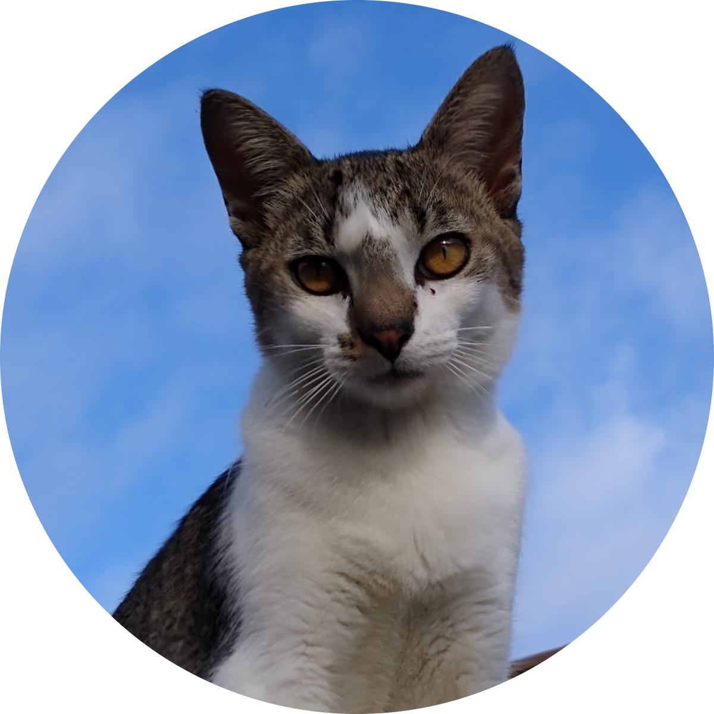

Olá! Meu nome é Olly
Miau miau gente! Meu nome é Olly e sou o gato mais incrível e bonito da vizinhança. Tenho 2 anos e 5 meses, e essa foto 3x4 aí foi tirada pelo meu avô (tava com uma remelazinha no olho nesse dia, e nem pra ele me avisar). Pensando em como ajudar novos papais e mamaes de gatos decidi tirar tudo do meu diário felino e mandar minha humana traduzir pro linguajar de vocês, pra compartilhar um pouco do meu conhecimento sobre gatos (ou pelo menos uma parte dele). Porque,sou muito bomzinho (mentira, todo mundo sabe que só to de olho nos petisquinhos, né?).
Sou um gato muito brincalhão então os melhores memes de gato tão aqui comigo, hein? Adoro arranhar tudo o que que vejo pela frente, pegar a meia da humana e esconder em um lugarzinho só meu, porque, né, diversão é isso aí! E não posso esquecer das brigas com os gatos menores que eu, é a lei da selva, pessoal, porque a vida é isso aí, né?, adoro dormir onde não deixam e adoro dar aquele toque especial pedindo pra descer do telhado às 2:40 da matina. É diversão garantida.